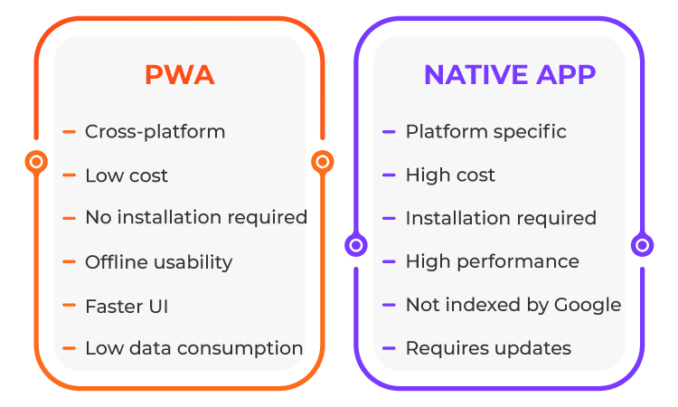
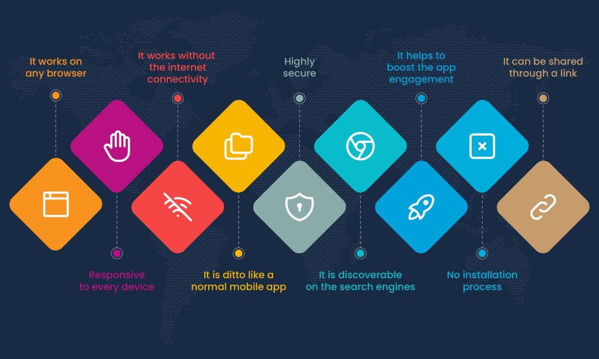

The internet is exploring the generation with the advent of its multifaceted capabilities that are driving to easiness. The Market performances eventually have evolved the global endeavors with varied experiments to brighten business operations efficiently. Users have their preferences that totally determine the hit and fall of any brand. Where every update is minutely addressed to fulfill the expectations of the global user community.
Meanwhile, apart from various business management applications existing still and solid in the online app stores. Progressive Web Apps (PWA) are evolving to define customization and customer satisfaction. Get yourself right in the hearts of the users with a custom solution defining your expertise.
A redefined version of traditional apps and websites that merely converges the properties of the both. Progressive web apps (PWA) are applications on the web browsers performing more efficiently than traditional models. They are comprehensive in terms of storage and speed. An easy-to-use application is capable of performing its task simply smooth, while its entity in the online store that is open for downloading versatile applications is not mandatory here.
Moreover the users are completely free to utilize these browser applications that are safe and secured at ease without spending any storage space. Their reliability and scalability contribute to better performance. Progressive web app does not demand users to download and then sign up to proceed. The user gets to experience the privilege of accessing the ecosystem directly via any browser. Moreover they also get instant content access despite clinging online or offline.
These storage free applications comprise a set of premium qualities that make them unique and standalone.
- The PWAs are reliable. They instantly load irrespective of the user being online or offline.
- They are more often known for their speed. In less than three seconds all the content and images display automatically despite any loading time or scrolling issues.
- Smoother Customer engagement. The users can conveniently engage and interact with the contents. And also there are options to take the application to the home screen, allow push notifications, and much more without any specific applicator.
To be very precise, these progressive web applications inherit the abilities and capabilities of the actual app while its existence stays confined with the web browsers.

- Native applications are written and coded to perform their task on the mobile phone while PWA are curated to be executed on the web browser.
- PWA responds to user commands despite being online or offline, while native apps are designed to perform tasks only when the user is online.
- The process of developing a Progressive Web App involves HTML, C++, Java Scripts, etc. And Native mobile apps vitalize on the scripts like Objective-C, Swift programming language for iOS and Java for Android.
Obviously, PWAs are powered by abilities to fetch the needs of the customer and accomplish them. Eventually address the questions of the versatile business operators including the marketers, tech leads, researchers and others.
Meeting the requirements of the first one in the row, the Customers (users) PWAs provide the best answer. In terms of being installable, fast, reliable, and engaging the platform is compatible to perform in both android and iOS browsers, facilitating its benefit to web browser users.
They are flexible to adopt new trends and betterment. Like other applications online, these PWAs are also prone to regular updates, leveraging in the process of heading to a sleek platform experience furnishing precise requirements.
PWAs resulting in higher mobile conversion rates, which helps in understanding business impact more clearly. And reflects in elongated user time in the space, reducing bounce rates, increasing conversions, and also contributing to increased returning users.
Multiple brands are already testing their PWAs within their ecosystem. There is commendable appreciation in the market. Twitter's initiative to launch their version of the application in the web browser, encouraged a wider set of audience to access its content without any restrictions.
This eventually held a substantial amount of users on track with the trends and tweets without signing up. That on the other hand contributed to increasing traffic. Along with this 75% increase in total tweets with 70% recline in data usage the decision of Twitter into PWAs is commendable and progressive. Various brands have empowered their performance with the ability of PWAs who showed 70% hike in traffic from that of the average native app. However, these applications are 25 times storage efficient and 15 times faster than the native applications.
Various brands have empowered their performance with the ability of PWAs who showed 70% hike in traffic from that of the average native app. However, these applications are 25 times storage efficient and 15 times faster than the native applications.
- Forbes with their PWAs saw a 100% flight in engagement and 50% hike in session interactions.
- Flipkart, known for its e-commerce business, hit a 40% increase in re-engagement with a 70% improvement in conversion rate.
- Makemytrip made a huge impression with PWA, 170% improvement in the shopper secession.
- Alibaba Groups sees a 76% increase in its conversion rate with their launch of PWAs.
- Pinterest hits a 40% increase in the time spent on mobile sites along with a 45% increase through ads generated by clients.

PWAs acting as a flexible hybrid model for users. This eventually made most of the top companies and brands adopt this trend. by enhancing their online experience by being less ponderous, and invites wider users.
In the cognitive operation, never development or the curation period seems hectic while marketing the minds of the users to use the platform is the real task. It is a high time that 57% of the individuals online are spent on apps, while 51% of users don't prefer to download apps often, not even in a month.
Meeting the customer requirements, PWAs give the users the experience of using a native app. While the streamline coding helps in cutting down on resources and expenses for the brands, the adaptive nature of the Progresive web apps is a bonus in the market.
As most of the experts in the industry have agreed with the abilities of PWAs and believe them to be the future. For those willing to facilitate their community and customers with a steady space to engage, interact and breed eventually, this is your solution to bang back.
The evolution happening with mobile applications and websites through PWAs is foreseen to have higher impacts. And most of the intriguing insights on these online applications back its back. So now head forth to buckle up with PWAs to hit your height in the industry that are engaging, scalable, reliable, dependent and speedy.
Lead Project Manager
Sivabharathy is a technical architect, technology enthusiast, and voracious reader. His visionary perspective has earned him opportunities to work with innovative projects in the computer software industry. He is an expert in PHP, JavaScript, NodeJS, Angular, Ethereum, Web3, Product Development, and Teamwork.